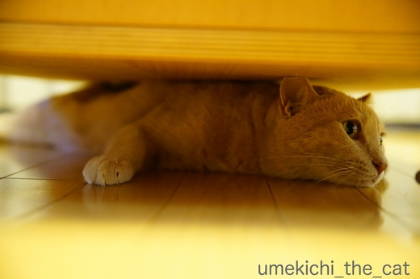
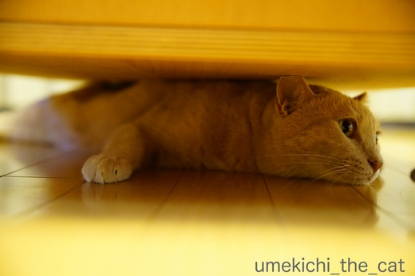

隠れているつもり・・・ [梅吉]
お盆休みを口実にすっかりブログの更新をサボっておりました^^;
我が家は梅吉を始め下僕二人も変わりなく元気に過ごしております。
お休みモードに入った我が家、梅吉さんは前回記事で私が予感した通り
朝からプロレスとその他は時々追いかけっこを楽しんでおります。
追いかけっこが盛り上がってくると

ローテーブルの下に入り込むのはもはや定番。

時々見られるこの「踏ん張るあち」に下僕二人大喜び。

はいはい。完全に隠れましたよー。
![[猫]](https://blog.ss-blog.jp/_images_e/101.gif) わしの いばしょは だれにもわからん。わし かんぺきにかくれたからな。
わしの いばしょは だれにもわからん。わし かんぺきにかくれたからな。
梅吉さんはどこに行ったんでしょうねーーーーー。

別の部屋へ探しに行くと「ええ〜 いかんといてや〜〜」と顔を出してアピールしてます(*>艸<)

ああっ！ここでしたかー！！と見つけてあげると
みつかってしもたー
とビックリ顔。リアクション大王ですね！
今朝は珍しくおかーさんとプロレス。
おとーさんにはやられっぱなしだけどおかーさんになら勝てると思ったのでしょうか。
鼻チュー攻撃で無力化してやりました![[手（チョキ）]](https://blog.ss-blog.jp/_images_e/87.gif)
 ↑ガブッと一押し↑
↑ガブッと一押し↑
なら燈花会（とうかえ）に行ってきました。
華麗に打ち上がる花火も良いですが暗闇にぽーっと灯るろうそくの明かりも良いものです。
春日野園地。広いスペースに一面に広がるろうそくの灯り。
こちらは浮雲園地。天の川を模してあります。
夜空に浮かび上がっているのは東大寺大仏殿の鴟尾。
興福寺エリアに移動して
浮かび上がる五重の塔。
この時期あちこちの寺院で万灯会が行われていますよね。
過去には唐招提寺、東大寺の万灯会へ行きましたが供養目的ではなく
観光として楽しみたい場合、なら燈花会はとってもオススメですよ〜。
唐招提寺は広々したスペース＆自由な感じでとってもよかったのですが
本堂の拝観を終えて灯籠に灯がともる時間になるまで
飲食をしたりして時間を潰す場所がほとんどなくちょっと困りました。
（私たちが知らなかっただけかもしれませんが・・・・・）
東大寺は沢山の灯籠の背後に浮かぶ盧舎那仏がとても良いのですが
入場するまでに拝観受付のスペースで入場制限がかかり
狭いスペースにすし詰め状態＆蒸し暑いで気分が悪くなりそうでした^^;
観光目的で来ているのに文句を言うなーって言われちゃいますけどねww
なら燈花会は歴史地区を散策しながら灯りを楽しめお食事する場所にも困りません。
ただし、お出かけの際は虫刺され対策を忘れずにww
我が家は梅吉を始め下僕二人も変わりなく元気に過ごしております。
お休みモードに入った我が家、梅吉さんは前回記事で私が予感した通り
朝からプロレスとその他は時々追いかけっこを楽しんでおります。
追いかけっこが盛り上がってくると

ローテーブルの下に入り込むのはもはや定番。

時々見られるこの「踏ん張るあち」に下僕二人大喜び。

はいはい。完全に隠れましたよー。
梅吉さんはどこに行ったんでしょうねーーーーー。

別の部屋へ探しに行くと「ええ〜 いかんといてや〜〜」と顔を出してアピールしてます(*>艸<)

ああっ！ここでしたかー！！と見つけてあげると
とビックリ顔。リアクション大王ですね！
今朝は珍しくおかーさんとプロレス。
おとーさんにはやられっぱなしだけどおかーさんになら勝てると思ったのでしょうか。
鼻チュー攻撃で無力化してやりました
なら燈花会（とうかえ）に行ってきました。
華麗に打ち上がる花火も良いですが暗闇にぽーっと灯るろうそくの明かりも良いものです。
春日野園地。広いスペースに一面に広がるろうそくの灯り。
こちらは浮雲園地。天の川を模してあります。
夜空に浮かび上がっているのは東大寺大仏殿の鴟尾。
興福寺エリアに移動して
浮かび上がる五重の塔。
この時期あちこちの寺院で万灯会が行われていますよね。
過去には唐招提寺、東大寺の万灯会へ行きましたが供養目的ではなく
観光として楽しみたい場合、なら燈花会はとってもオススメですよ〜。
唐招提寺は広々したスペース＆自由な感じでとってもよかったのですが
本堂の拝観を終えて灯籠に灯がともる時間になるまで
飲食をしたりして時間を潰す場所がほとんどなくちょっと困りました。
（私たちが知らなかっただけかもしれませんが・・・・・）
東大寺は沢山の灯籠の背後に浮かぶ盧舎那仏がとても良いのですが
入場するまでに拝観受付のスペースで入場制限がかかり
狭いスペースにすし詰め状態＆蒸し暑いで気分が悪くなりそうでした^^;
観光目的で来ているのに文句を言うなーって言われちゃいますけどねww
なら燈花会は歴史地区を散策しながら灯りを楽しめお食事する場所にも困りません。
ただし、お出かけの際は虫刺され対策を忘れずにww

カフェオレ色の梅吉

梅吉 2023年8月10日 永眠


梅吉と出会った譲渡会

犬猫の理由なき殺処分ゼロ
妄想広告
UMEKICHI 光

爆発的に早い！
時々攻撃的！
Thanks to Mr.Boss365
爆発的に早い！
時々攻撃的！
Thanks to Mr.Boss365

梅吉さんかくれんぼ楽しんでいますね！
奈良は昨年の夏に行きましたが暑かったです(^^)
by ma2ma2 (2017-08-17 21:01)
「いかんといてや〜〜」の表情がいいですね！
ローテーブルの隙間には、梅吉さんのロマンが隠れているのかも。^^;
ろうそくの灯り、とても幻想的ですね。^^)
by yes_hama (2017-08-17 21:18)
お盆休みは梅吉さんと満喫ですね(*^_^*)
かくれんぼしている梅吉さん！
後ろ足も可愛いですねぇ～♪
by きぃ (2017-08-17 21:27)
梅吉さんのこのぷりん♪としたお尻にセクスィな足（≧∇≦）
萌えます〜( ´ ▽ ` )ﾉ
お猫様ってなぜに「自分は完璧に隠れた！」って思うんでしょうねぇ(⌒-⌒; )
見つけたら「エェ！？」って顔されるので思わず「ごめん」と言ってしまいますw
なら燈花会、幻想的で美しいですねぇ( ^ω^ )
いつか見に行きたいなぁ♪( ´▽｀)
by ニッキー (2017-08-17 22:02)
この『踏ん張るあち』に下僕さんだけではなく、私目も大興奮（笑）
ピンク色した肉球が、なんとも愛らしいです。
by kiki (2017-08-17 22:30)
梅吉君の隠れ方が可愛いなー！
自分の事を気にしてほしいアピールを、ちゃんとするのですね。
なら燈花会、お盆のこの時期に相応しい行事ですね。
暗闇に並ぶろうそくの灯は、幻想的で美しく、優しいです。
by うめむす (2017-08-17 22:43)
11日ならまちへ行ったときも開催していましたね。都合で夜には帰ったのですが素敵ですね～行けば良かった。
by みぃにゃん (2017-08-17 23:07)
梅吉さんべったんこ! 家具の下で平らになってる~。
なら燈花会は風情があって綺麗ですねー。
by zombiekong (2017-08-18 01:44)
追いかけっこ、楽しそうです。
私も時々やります(^-^;
夜景が綺麗です。ろうそくの明かりがいいんですよね(^^♪
by riverwalk (2017-08-18 05:02)
梅吉さん、スリムだからこんな隙間に入れちゃうんでしょうね。
＞みつかってしもたー の顔がなんとも＾＾
by ぽちの輔 (2017-08-18 08:12)
可愛い～♪ お掃除ロボと追いかけっこしたらどうかな～？
お盆の時期の柔らかな灯りは、御霊が戻って来るようで何かせつなくなります。。。
by Ginger (2017-08-18 13:51)
おかーさんと梅吉くんのプロレス。
おかーさんの鼻チューで梅吉くん無力化！
梅吉くんの鼻チューでおかーさんも無力化！平和すぎる～(^-^)
ろうそくの灯り。美しくて心に染みます。
by emi (2017-08-18 15:17)
行かんといてや～って顔最高です(*^。^*)もしかして寂しがり屋の甘えん坊さんですね
by palpal (2017-08-18 15:49)
梅吉くん、スリムなあんよ突っ張って奥にすっかり隠れたつもり？
でも、いかんといての顔が可愛い～♪
そして、見つかってビックリ！
毎日楽しそう～＾＾
鼻チューで無力化作戦も楽しそう＾＾
燈花会、美しいですね‥せつなくて、美しい＾＾
by sana (2017-08-18 23:35)
わくわくしながら見つけてくれるのをペッタンコになって待っている梅吉さん、かわいいにゃ～(*^▽^*)
鼻チューで無力化、ウチでもオモチャを離さない時に「かあちゃんとチューしよ～」と顔を近づけていくと、ものすごく嫌そうにオモチャを離します。嬉しいような悲しいような・・・(^▽^;)
奈良の燈火会、ロウソクで暑い、虫が多い、ロウソクの合間は人だらけでガッカリして以来行ってません。でも春日野園地の写真、人がいなくてとても美しいです♪
by ゆきち (2017-08-18 23:56)
あち！！！(*^^*)かわいいいいいい〜
お耳までぺったんこにしてまで潜り込んでいる姿にも萌えます。
先代さんは下僕のくちびるに肉球をそーっと当ててくることがありました。
あれって｢チューは拒否｣ってことだったのかなぁ？？(^^;
by も〜 (2017-08-19 00:08)
うへへ(^.^) せっまいところに、潜みはりますにゃあ♪
見つけてほしいんやねぇ〜 寂しがり屋さん♡
燈花会、きれいですね♪ 幻想的〜♪
by のらん (2017-08-19 07:56)
ma2ma2さん＞夏らしくない関東ほどではありませんが
今年の関西は例年に比べると凌ぎやすい様な・・・・・
私が奈良に行った夜も比較的過ごしやすくて助かりました＾＾
yes_hamaさん＞そうか！あの隙間には私には見えないロマンが・・・・・
私もあの隙間に入れたら見られるのかしら＾＾
あの沢山のろうそく、ボランティアの方が管理していたようです。
きぃさん＞私よりもおっとの方が梅吉との時間を満喫している様ですよ＾＾
かくれんぼの後ろあちは「ぐぐぐぐっ」と力んでいるのが
さらに可愛いのです♪
ニッキーさん＞ばっちり目が合っていても「見つかっていない！」
と言い張りますよね、ネコ様は^^;
なら燈花会、今年は台風や雨の日に当たらなかった為か過去最高の（今年で9回目）
人出になった様です。
機会がありましたら是非♪
kikiさん＞そう言えば梅吉の肉球をご紹介したことってなかったですね_φ(･_･
四脚とも肉球はピンクで〜す。（我が家の四宝(≧▽≦)）
走り回ったりして血流が良くなると（？）ちょっと赤みを帯びて来ます。
「踏ん張るあち」の肉球はいつもより赤めですよー(^_－)☆
うめむすさん＞このローテーブルの下の他にソファーカバーの端っこに
鼻先だけ突っ込んで「かくれた！！」というのもあるんですよ〜(*>艸<)
自分の体の一部分でも隠れたら見えない・・・と思っているのかも^^;
ろうそくの灯り、時節柄の祈りの気持ちも込めて見て来ました。
みぃにゃんさん＞１１日に！それは惜しかったですね〜〜。
今度はぜひ燈花会を目的に＾＾
zombiekongさん＞まさにべったんこです＾＾
梅吉が入り込める最狭家具隙間。
これより狭いところは（掃除してないから）勘弁してほしいデス^^;
私の出身地の札幌ではこういう風情のある行事がほとんどなかったので
毎年あちこち楽しんで出かけていますよ〜(≧▽≦)
riverwalkさん＞ユキちゃんモモちゃんも追いかけっこ！
あ、お相手してくるのは（笑）ユキちゃんかな(*>艸<)
ろうそくの灯り、ホッと一息つける様な明かりでしたよ＾＾
ぽちの輔さん＞のび〜るとほそ〜くなる！と言う感じです(*>艸<)
散々目が合っていたのに「みつかってしもたー」でしたww
Gingerさん＞お掃除ロボには追いかけっこではなく
戦いを挑んでズタボロにすると思われます^^;
よって我が家では導入を断念しております^^;^^;
この時期の灯りにはきっとニンゲンや動物の御霊が引き寄せられて来ていますよね。
「地上に戻って見てよかったなー」と幸せな気持ちになって
またお空に戻ってくれているといいな＾＾
emiさん＞なぜか鼻チューすると戦意喪失するんですよね^^;
「わしのおはながけがれた」と言わんばかりに舌をベロベロしながら
お手手を使って必死にお口とお鼻を舐める姿にちょっと失礼じゃない！と思ったり。
ま、それがまたかわいいんですけどねー(^_－)☆
palpalさん＞ああ〜、もう相当な寂しがりやの甘えん坊さんですよ！！
かまってちゃん大王でもあります(*>艸<)
sanaさん＞目がばっちり合っているのに「かくれた！」と思うのは
いかがなものか・・・ですが、お猫様ですから〜(≧▽≦)
鼻チューはとっても迷惑そうにされるのですがその顔が可愛くて
ついついやってしまいます。
「やめろ〜」と私の顔に両手を突っ張ってくるのもまた嬉しくて(^▽^;)
燈花会、灯りを見ながらちょっとホッとして来ました＾＾
ゆきちさん＞そうそう＾＾顔を近づけるとものすごく嫌な顔しますよね〜 (^▽^;)
しつこく顔を近づけると両手で突っ張ってくるのですがそれが大好物な下僕です(*>艸<)
燈花会、体験済みでしたか。
今年は過去最高の人出があった様で私たちが行った時も人がいっぱいでした〜。
が、夫婦ともに人混み嫌いのマイナー気質なので人のいない方いない方へ・・・(^▽^;)
それでもまずまず楽しんで来ました。
夕食をとって（＝お酒を飲んで）出かけたので虫刺され対策は万全で
虫には勝利して来ましたww
も〜さん＞先代さんはそーっとくちびるに肉球を！？
それは下僕大喜びの行為ではないですかＯ(≧▽≦)Ｏ
（拒否の意味だと思われますが^^;）
梅吉は私の顔の形が変わるくらい両手を突っ張ってチューを拒否して来ますよ。
それがまた嬉しい＆楽しい猫変態です(*>艸<)
のらんさん＞見つけてあげないと「ていっ！」と攻撃してくることも^^;
遊んでいただいている下僕としては嬉しい限りです！！
燈花会、人出も大変なものでしたが
「これだけ人がいたら私よりも蚊に刺されやすい人がきっといる！！」と
妙な安心感がありました (^▽^;)
by ちぃ (2017-08-19 21:39)
そんな低いとこにー！
隠れ上手ですね。
燈花会の灯りは幻想的だ。
by 響 (2017-08-20 08:39)
そんなとこに入れるなんて痩せているのねえー！
by じゅらまろ (2017-08-21 12:25)
響さん＞体の一部分だけでも隠れているとニンゲンには見えない・・・と
思っている様で(⌒_⌒;
「わし、めっちゃかくれじょうずや」と思っているんだろうなー(*>艸<)
燈花会、ホッとする灯りでした。
じゅらまろさん＞以前よりはスリムになったのは確かだけど
痩せているというか、長〜〜〜〜〜〜〜くなるの！
by ちぃ (2017-08-21 14:45)